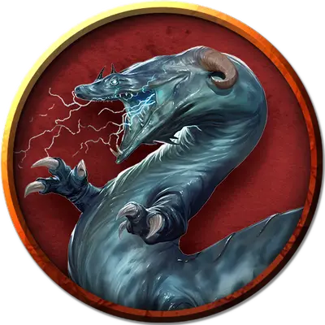

Рунный бехир
Runed Behir
Огромный Монстр, нейтрально-злой

Класс Доспеха 17 (природный доспех)
Хиты 168 (16к12 + 64)
Скорость 50 футов, лазая 40 футов
| мод | спас | ||
|---|---|---|---|
| СИЛ | 23 | +6 | +6 |
| ЛОВ | 16 | +3 | +3 |
| ТЕЛ | 18 | +4 | +4 |
| мод | спас | ||
|---|---|---|---|
| ИНТ | 7 | −2 | −2 |
| МДР | 14 | +2 | +2 |
| ХАР | 12 | +1 | +1 |
Навыки Восприятие +6, Скрытность +7
Иммунитет к урону электричество
Чувства тёмное зрение 90 футов, пассивное Восприятие 16
Языки Драконий
Опасность 11 (7200 опыта)
Бонус мастерства +4
Действия
Мультиатака. Бехир совершает две атаки: одну укусом, и одну сжиманием.
Укус. Рукопашная атака оружием: +10 к попаданию, досягаемость 10 футов, одна цель. Попадание: Колющий урон 22 (3к10 + 6).
Сжимание. Рукопашная атака оружием: +10 к попаданию, досягаемость 5 футов, одно существо с размером не больше Большого. Попадание: Дробящий урон 17 (2к10 + 6) плюс рубящий урон 17 (2к10 +6). Цель становится схваченной (Сл высвобождения 16), если бехир пока не сжимает никакое существо. Пока цель схвачена, она опутана.
Электрическое дыхание (перезарядка 5–6). Бехир выдыхает молнию длиной 20 футов и шириной 5 футов. Все существа в этой линии должны совершить спасбросок Ловкости Сл 16, получая урон электричеством 66 (12к10) при провале, или половину этого урона при успехе.
Проглатывание. Бехир совершает одну атаку укусом по существу с размером не больше Среднего, схваченному им. Если эта атака попадает, существо становится проглоченным и перестает быть схваченным. Будучи проглоченным, существо ослеплено и опутано, и обладает полным укрытием от атак и прочих эффектов, исходящих снаружи бехира, и получает урон кислотой 21 (6к6) в начале каждого хода бехира. У бехира может быть проглочено только одно существо одновременно.
Если бехир получает за один ход 30 или больше урона от проглоченного существа, бехир должен в конце этого хода преуспеть в спасброске Телосложения Сл 14, иначе отрыгнет существо, которое падает ничком в пространстве в пределах 10 футов от бехира. Если бехир умирает, проглоченное существо перестает быть опутанным им, и может высвободиться из трупа, потратив 15 футов перемещения, падая при выходе ничком.
Легендарные действия
Бехир может совершить три легендарных действия, выбирая из представленных ниже. За один раз он может использовать только одно легендарное действие, и только в конце хода другого существа. Бехир восстанавливает использованные легендарные действия в начале своего хода. Его базовой характеристикой является Харизма (Сл спасброска от заклинания 13).
Малое колдовство. Бехир накладывает заклинание сверкающие брызги [color spray] или усыпление [sleep], без требуемых компонентов.
Высшее колдовство (2 действия). Бехир использует заклинание невидимость [invisibility] или туманный шаг [misty step], без требуемых компонентов.
Описание
Мускулистое, змееобразное тело, обвивается вокруг сталагмитов. Шрамы, высеченные на его чешуйчатой шкуре в виде магических рун, нанесены Халастером. Руны дают возможность бехиру использовать следующие легендарные действия.